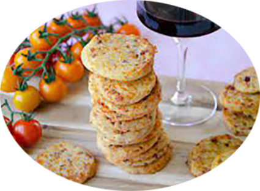

Palets comté poitrine fumée

Préparation : 15 mn
Cuisson 10 mn
Ingrédients
- 150 g de farine
- 200 g de comté râpé
- 200 g de poitrine fumée
- 75 g de beurre
- 1 œuf
- 5 cuillerées à soupe de lait
- sel et poivre
Recette
- Déposez la poitrine fumée dans une poêle froide puis démarrez la cuisson sans ajouter de matière grasse.
- Quand toutes les tranches sont grillées, découpez-les en petits morceaux.
- Faites fondre le beurre et laisser refroidir.
- Mélangez dans un saladier le beurre fondu, le lait et le comté râpé.li>
- Quand la pâte est prête, roulez là en un boudin d’environ 5 cm de diamètre.
- Enroulez le boudin dans un film alimentaire et réservez au moins une heure au frigo.
- Préchauffez le four à 180°C
- Sortez la pâte du frigo, ôtez le film alimentaire et coupez des tranches de pâte de 1/2 cm d’épaisseur.
- Faites cuire 10 à 12 min sur une plaque recouverte de papier cuisson ou d’un tapis de silicone.
- Laissez refroidir avant de servir.
|